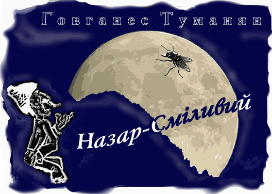
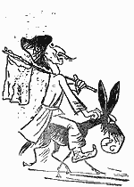

Назар-Смiливий (1)
Так, чи інак, a кажуть жив такий собі бідак – Назаром звався. Ледар, яких світ не бачив.
А боягуз! А страхополох! Сам-один з подвір´я й на крок не ступить, хоч убий. Із ранку до вечора до жінчиної спідниці, мов пришитий: вона з хати – він за нею, вона до хати – він слідом. За те й прозвали: Назар-Боягуз.
От якось поночі виходить Назар-Боягуз вслід за жінкою на подвір´я. Ступив за поріг, бачить: місяць уповні, сяє – аж ну!
Мовить Назар:
- Оце, жінко, тай ніч!.. Тільки каравани різати... Серце так вже й шепоче: "Йди-но, розбий царський караван, що з Індії суне. Добра награбушь! Повнісіньку хату".
А жінка на те:
- Сиди вже мовчки, бачили таких різак.
Назар їй:
- Дурепо! Чого встряєш? Не даєш караван пограбувати, добра в хату добувати! Дивись дограєшся – повчу, як з чоловіком розмовляти.
Як розбурчався! А жінка до хати – миг! І двері на засувку:
- Щоб ти луснув, боягуз! Оце і одправляйся каравани різати.
Лишився Назар за дверима. Од жаху аж посинів. Вже й молив, вже й просив, щоб відчинила – дзуски!
Нема діла; пішов під стіною скулився, протремтів усю ніч до світанку.
От і сонце зійшло; настраханий Назар все під тою ж стіною, очікує коли жінка вийде – одведе до хати.
Жде, думу думає.
А день літній. Спека. Мухи дзижчять, як скажені. А цьому ледацюрі ліньки й носа втерти.
То мухи вже й ніс йому обліпили, на губі рояться.
Допекли-таки: підвів руку – лупонув. І—як ляснув себе по мармизі—сипонули вбиті мухи.
- Овва! Чи ти ба?..- здивувавсь Назар.
Хоче злічити, скількох за раз коцнув – не здужає. На око, начеб, більш, як сотню.
- Ти-ба,- каже,- так оце такий я чолов´яга? А досі й гадки не мав!.. І ото щоб я—здатний разом сотню вжвакнути—тай тримавсь баби негідної!..
Підхопився і, як стій, до сільского старости.
- Славайсу, пан староста.
- Славайсу, синку.
- Пан староста, оце таке й таке діло.
Розказав про подвиг свій; і що жінка ота йому вже нідочого, тільки-от проханнячко є: хай пан староста напишуть, яке він, ото, діло втяв, аби вже в безвісті не лишилося; а так усі прочитають – знатимуть.
Отже староста, жартома, на шматку ряднини пише:
Назар-Сміливий: сила й міць!
Раз лупоне – юрма з копиць!
Тай дає йому.
А Назар тую ряднину в´яже на жердину; уламок ржавої шаблюки при боці почепив; в сусіди вислюка поцупив, сів і – з села потріхкотив.